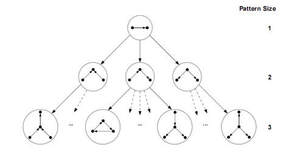

My Degree Programme 
Introduction to Software Engineering
In this module we learn about key aspects of being a software engineer, such as working together in a large team toward a shared goal. The lectures mostly consist of infomation that prepares us for the work that a software engineer would carry out, whilst having a key focus on meeting the demand of the client. In the practical sessions, we are learning to code using Ruby, which is a new programming language used in big companies such as Twitch and Airbnb.
Foundations of Computer Science
With a large emphasis on logical thinking, this module focuses on developing mathematical concepts and techniques that must be understood to appreciate the foundations of computing. "Modelling Computing Systems" is a book we use frequently for extra practice. For more infomation, or to purchase the book, please follow this link: Modelling Computing Systems.
Java Programming
In this module we learn how to code using java. No prior programming knowledge or experience is needed, therefore all the basics of coding and the understanding of every method and technique used is a big focus throughout the teaching.
Machines and Intelligence
In this module we learn about artificial intelligence. Problematic questions are a key focus, such as whether a computer will be capable of understanding, what the defenition of intelligence is (my personal favourite can be found under the defenitions header after following this link: intelligence defenition), and whether humans should be viewed as machines. Furthermore, another focus is on the history of AI, and key dates in history that set the path for where we are today.
Devices and Networks
This module focuses on computing devices and computer networks. It includes computing fundamentals such as binary and floating point numbers. The lab classes require important mathematical skills, such as converting between binary, hexadecimal and decimal numbers.
Web and Internet Technology
This module looks at the practical modern day uses of HTML, CSS and JavaScript in the development of interactive websites, whilst taking a more in depth dive into responsive web design, accessibility and legal issues of their creation.

Introduction to Algorithms and Data Structures
Since I have not started this module yet, I cannot speak from personal experience, however the University of Sheffield website explains that "Students learn how to quantify the efficiency of an algorithm and what algorithmic solutions are efficient." It further explains the techniques behind the design of efficient algorithms, and also the storing and retrieving of data in data structures.
